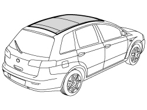
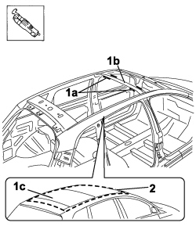
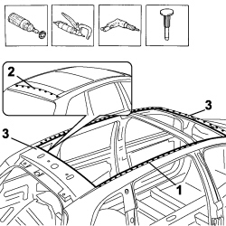
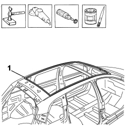
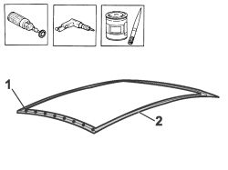
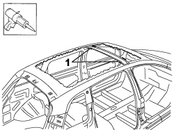
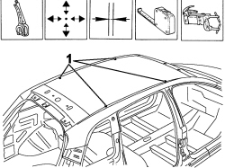
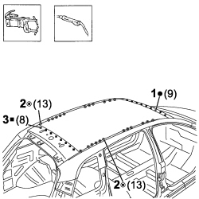
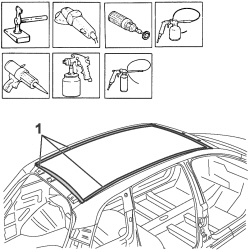

7210E28 R.R. ROOF PANEL
- Path
- Procedures > 72 PANELS AND FRAMES > 7210 REMOVING-REFITTING > 7210E EXTERNAL PARTS > 7210E28 R.R. ROOF PANEL
- Kind
- repair procedure (removal / refitting; the operation number is the code)
- Applies to
- all engines; all production periods
- Interactive page
- https://sloeber94.github.io/elrnDB-fCrm/en/#/194001244
Applies to: all engines; all production periods
 Removing
Removing
 Refitting
Refitting- Check that the components connected are not distorted by checking the bodyshell alignment measurements using suitable equipment (gauges, templates or jigs).
- Straighten the body as necessary.

Applies to: all engines; all production periods
1. Using the vibrating knife with the special blade, cut the sealant (1a) between the rib (1b) of the roof (1c).
2. Use the hack saw following the cutting line in the diagram.
- Remove the roof offcut from the vehicle.

Applies to: all engines; all production periods
- Use the rotary brush and remove the paint to access the spot welds.
1. Use the chamfering machine to remove the spot welds shown in the diagram.
2. Use the drill and remove the spot welds not accessible with the chamfering machine.
- Use the hammer and chisel and remove the spot welds chamfered previously.
3. Remove the offcuts from the vehicle.

Applies to: all engines; all production periods
- Straighten the edges of the roof housing using a hammer and dolly block.
- Remove the spot weld residues using a disc grinder.
- Use a rotary brush to clean the areas treated previously.
1. Apply electro-galvanizing paint.

Applies to: all engines; all production periods
- Work at the bench and remove the anti-corrosion treatment from the entire perimeter of the inner and outer parts using the rotary brush.
1. Use the drill to make equidistant holes in the area shown in the diagram.
2. Apply electro-weldable paint to the points treated previously.

Applies to: all engines; all production periods
Refitting
Removing1. Renew the sealant between the roof and the centre rib.

Applies to: all engines; all production periods
- Position the replacement part correctly on the vehicle and secure it using self-locking clamps.
- Fit the tailgate and check the alignment and the surrounding gaps.
- Use the rule to check the windscreen housing diagonals.
1. Make a few spot welds on the roof.
- Remove the tailgate.

Applies to: all engines; all production periods
1. Use a spot welder to weld the roof in the rear of the windscreen.
2. Use a spot welder to weld the roof in the left and right side panel areas.
3. Use a MIG welder and fill weld the openings made previously in the area of the tailgate housing.

Applies to: all engines; all production periods
- Correct any distortions to the panel using a hammer and dolly block.
- Use a disc grinder to level the welding.
- Use a rotary brush to clean the areas treated previously.
1. Apply anti-oxidant protection to the areas involved in the welding.
- Seal the join lines between the replacement part and the vehicle.
- Proceed with the painting stage.
- Apply wax protection to the inside of the roof.
